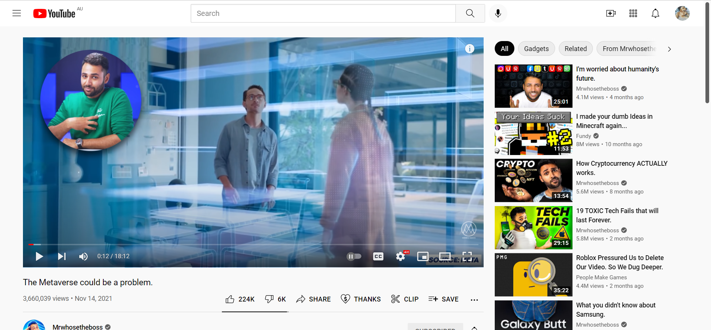

Social Media
Social media is a great tool for communicating with people that you can't meet with in real life very often. Chances are, you've most likely used it yourself. Some examples of social media are Meta (Facebook), Instagram (Meta), Snapchat, YouTube, TikTok.
Social media was originally created as a tool for people to communicate with each other when they can’t meet up in real life, adding to the joy of talking with friends and family. It can also be used to communicate with a teacher or others about stuff. Take YouTube for example, you just saw a funny video and want to share it with someone, social media is something you could use to accomplish that.
YouTube
YouTube’s main purpose is to give people an opportunity to create enjoyable content and earn money, or just watch some videos! These videos can be educational, funny, even sad- of course those are only some genres that are contained without the vast world of YouTube. Some companies use YouTube to create ads to promote themselves, or their products/apps. Other times people just create reviews, gameplay videos and other content like VLOGs for the enjoyment of users and the profit of making videos.
Snapchat & Instagram
Snapchat is a great way of chatting with friends, playing games, taking selfies and more. It has some good features including an easy-to-use interface that allows you to subscribe and follow people, receiving notifications whenever they post something.
It’s very easy to take selfies and photos with Snapchat, coming with a lot of AI edits, filters, effects, and music that is all there, and you could use it whenever you want to improve your posts. Same with Instagram, it has a lot of images editing feature too. But Snapchat is way more kids friendly and Instagram is more for business uses.
Meta
You’ve probably heard of the Meta Universe before, maybe from the news or someone posted about it on YouTube. It takes social media into the next level!
Facebook renamed their company to Meta a while ago. Why? Because they are creating something huge called the Meta Universe that is basically is a virtual world in VR. People can have the face they want, people can have the ability to teleport, or even work in it.
TikTok
TikTok is a social media platform that has taken the favour of many people around the world. On TikTok, you can make shorts of you singing, or doing something funny for the entertainment of others. When people are bored, a lot of the time they may go to social media, TikTok in this case and scroll through clips to find some joy. The best part of TikTok is that because the videos are short, they're plentiful and even easier to make (most of the time). YouTube later included shorts feature due to the popularity of them in hopes that they may gain more support and users.
Social media is a great tool for a lot of things, BUT it can do a lot of harm to people.
Social media companies have a very similar goals, that goal making money, but you may think the app itself is free, how do they make money? There are a lot of ways for them to make money, the most common way is to show users ads. To make companies want to use your app (the social media) as their promotion tool, you first need to make yourself popular right? When a lot of users use your social media platform, companies will want to promote their products using your social media app because a lot of people will see it, so the social media companies need to innovate some ways to make users use their app a lot.
There are multiple ways for companies to get more users using their apps, the most common way by using you essentially as their ‘worker’, then make more people into their workers using you, it’s like a plague spreading from one user to another. For example: YouTube. You wonder how, isn’t YouTube just a tool for us to learn and have fun? Well, that’s not the whole truth. YouTube wants people to create videos, you may be a content creator yourself and make YouTube videos, it might be YouTube shorts, or some video for teaching. But when you think you’re creating the videos for the community, you’re actually helping YouTube to get more people using their platform. If your videos are good more people may want to watch future uploads, sometimes leading an inspiration for other viewers to start wanting to create their own videos, either having fun or joining the race for the youtuber with the most subscribers. That is part of what encourages peoples’ goals for YouTube.
This is the Same for TikTok, it works just like YouTube but with more videos because they are all shorts. This means they can earn more by ads because you’re constantly scrolling through more clips because they’re so short. Snapchat, Facebook, Instagram all work in similar ways too, but with things called stories and feeds.
Social media not only draws you attention into spending all of your time scrolling through feeds, wasting it, it also contains a chat feature that can cause a lot of problems like cyberbullying, issues communicating in real life because you chat too much digitally.
A lot of suicides are caused by social media through depression, low self-esteem, cyberbullying and other online issues. You might be wondering how can social media can cause depression? There might be multiple reasons: the first one is online bullying. Online bullying happens a lot because people just don’t feel like bullying someone in real life or are just too scared to be seen doing it, so they turn to bullying digitally on social medias.
The second most common reason is due to not achieving the goal they set, in terms of follower count for example, sometimes even likes. Other times things can go wrong and people might laugh at in you in real life because of it.
How does companies make you to use they products (social media)?
When you are scrolling though feeds, or just browsing YouTube, you’ll always see the videos/posts that you like to see, so you just want to watch it/keep scrolling through recommendation that are set in place for you because of something called machine learning.
Not only social media have machine learning system, they also designed to be addicted. Including the user interface that trying to make the app easier to use, and the notification system that is running in the background of your phone. When someone posted something, or when someone sent you a message, the app is going to try to survive in the background and not get killed by the operating system to show you the notification. When you get the notification, your brain will get a rush of dopamine that make you wanting to check what’s happening either if it’s you received a message from someone or someone liked your video/post , so you won't miss out.